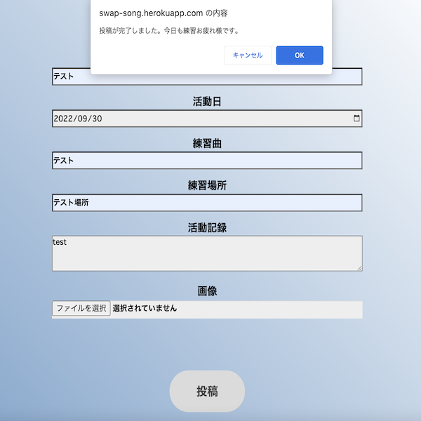

swap-song（オリジナルアプリ）
開発環境
Ruby / Ruby on Rails / MySQL / GitHub / Heroku / Visual Studio Code / Trello
-
概要
制作時間 50時間 URL https://swap-song.herokuapp.com/ ID kazuhira PASS 1228 -
動作テスト
テスト用アカウント
mail test_user@hoge.com PASS test1234
OUTLINEアプリケーションの概要
オリジナルアプリケーションとして、プライベートで活動している社会人アカペラサークル「音活サークル(仮名)」に所属する、アカペラバンド間の活動記録を共有するアプリを開発しました。主な機能は、ユーザー登録機能・アカペラ活動記録タイムラインの表示や投稿・バンド(グループ)一覧の表示や登録などです。トップページから、活動記録タイムラインやバンド一覧を閲覧するページに遷移することができます。ユーザー登録をすると、それらのタイムラインに活動記録を投稿することができます。また、投稿された活動記録に対するコメントの送付や、アカペラバンドの新規登録も行うことができます。
-
開発に至った経緯
「音活サークル」では、200名近くのメンバーが所属し、それぞれがアカペラバンドを組んで活動をしています。しかし、これだけ大きなコミュニティにも関わらず、他のバンドの活動内容やメンバーの情報が分からないという問題点がありました。
バンド情報と所属メンバーの情報を開示した上で、活動内容を共有することができれば、お互いの練習の参考になり、刺激し合いながらアカペラを楽しむことができると考え、今回のアプリケーションを開発することにしました。
また、転勤などでメンバーが脱退した際、バンド欠員の補充をよりスムーズに行えるよう、予めアプリの新規登録時に、対応できるパートと他バンドへの兼任希望の有無を登録できるようにしました。 -
開発で工夫したこと
開発を行う前に、実際のバンドメンバーに「音活サークル」の満足している点・満足していない点のヒアリングを行いました。ヒアリングの結果、他のバンドが普段どんな活動をしているのか、どんなメンバーがいてどんな曲を練習しているのか、情報を知りたいという意見が多く上がりました。そこから、メンバーの抱えている困り事をどうアプリで解決できるかを考え、本アプリの構想に至りました。
サーバサイドの実装では、これまでの学習で培った知識を活かしつつ、topsコントローラーによるトップページの実装や、登録・削除ボタンの操作後に出現するダイアログボックスの実装など、自ら外部サイトで調べた技術を本アプリの開発に取り入れることができました。フロントのマークアップでは、少しでも利用者に親しみを感じてもらえるよう、トップページの背景にコンデンサーマイクの写真素材を導入したりするなど、見栄えの良いデザインになるよう工夫しました。 -
今後実装したいと思っていること
動画の埋め込み機能を実装したいです。アカペラバンドが歌唱している動画を、任意でバンド詳細画面にアップできるようになれば、より他のバンドのことを深く知ることができるようになります。